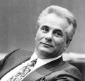

Pahalı giysileri, fönlü saçları ve desenli çorapları nedeniyle “Dapper Don” (Şık Don) adı verilen John Gotti (1940–2002), son yılların en ünlü mafya babalarından biriydi. New York’lu Gambino ailesinin lideri olarak büyük bir suç imparatorluğu kurmuştu. Aile tefecilik, araba hırsızlığı, eroin ticareti gibi işleri yürütüyordu. Gotti, 1992 yılında cinayet ve haraç kesmekten mahkum oldu. Cezaevine gönderilmesi ve müebbet hapse mahkum edilmesi devletin organize suça karşı kazandığı önemli bir zafer olarak görüldü.

Gotti pek çok açıdan alışıldık gangster tiplemesinden farklıydı. Geçmişin toplumun önüne çıkmaktan çekinen utangaç gangsterlerinden farklı olarak o, spot ışıklarının üzerinde olmasını seviyordu. Kimi öncülleri tarafından karşı çıkılan uyuşturucu satışını da onaylıyordu. Uyduğu tek gelenek şiddetle olan ilişkisiydi. On üç cinayetten mahkum olmuştu. Belki daha düzinelercesinin emrini de verebilirdi. 1980 yılında Gotti’nin on iki yaşındaki oğlu Frank’ı kazayla vurup öldüren komşusunun ortadan kaybolmasını da onun planladığına inanılıyordu.
Gotti, Bronx’ta doğdu. Brooklyn’e taşındıktan sonra bir sokak çetesine katıldı. New York’un beş mafya ailesinden biri olan Gambinolar ile yolları 1960’larda kesişti. 1970’lerin sonu ve 1980’lerin başında mafya babası oldu. Gambino lideri Paul Castellano’nun (1915–1985) Manhattan’da bir et lokantasının önünde öldürülmesini organize etti. Böylece 1985 yılında çetenin başına geçti.
Gotti, yirmi üç asil üyenin dışında toplam 300 kişilik bir ekibi kontrol ediyordu. Çete önemli bir bölümü Gotti’ye giden milyonlarca dolara hükmetmekteydi. Gotti, vergi beyanında ise kendisinin sadece Queens’te tesisat malzemeleri satan bir tüccar olduğunu ileri sürüyordu.
Gotti iki federal davadan kurtuldu. Böylece ona “Teflon Don” denmeye başlandı. Derken eski bir adamı olan Sammy “the Bull” Gravano (Boğa Sammy Gravano) (1945–) cinayetlerdeki rolü için alacağı cezanın azaltılması karşılığında aleyhinde tanıklık etmeyi kabul etti. Böylece Gotti ömür boyu hapse mahkum edildi. Altmış bir yaşındayken hapiste öldü. Ardından oğlu John A. Gotti (1964–) Gambino lideri oldu. 1999 yılında o da hapse girdi.
Ek Bilgiler
1- Gotti ateşli bir kumarbazdı. Bir zar oyunda 60 bin dolar kaybettiği söyleniyordu.
2- Gravano tanık koruma programına alındı ve Arizona’ya yerleşti. Ancak çok geçmeden suç yaşamına geri döndü. Phoenix’te ekstasi ticareti yaptığı için 2002 yılında tutuklandı.
3- 1970’lerin başında Gotti’nin savunma avukatı Roy M. Cohn’du (1927–1986). Cohn 1950’lerde Senatör Joseph McCarthy’nin (1908–1957) baş danışmanı olarak ünlenmişti.